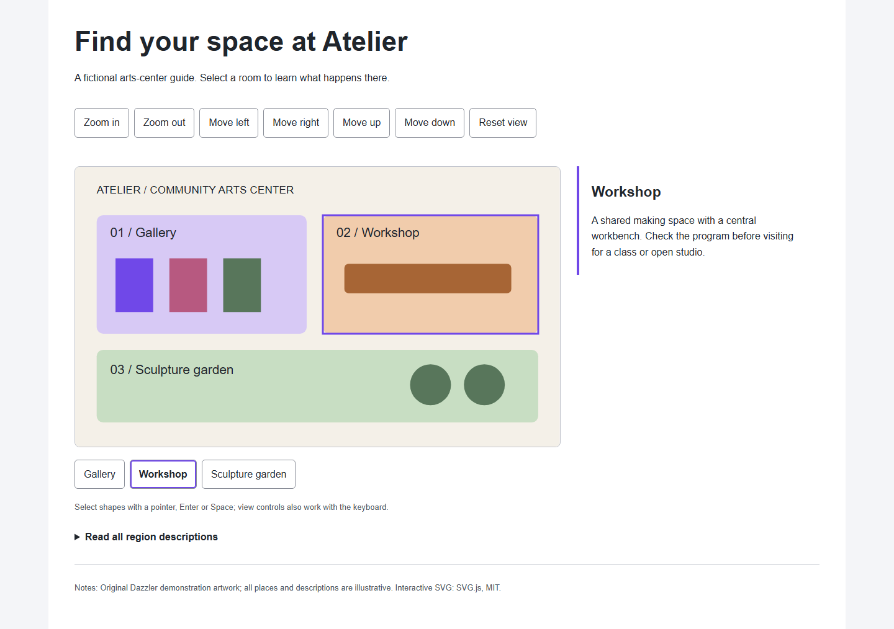
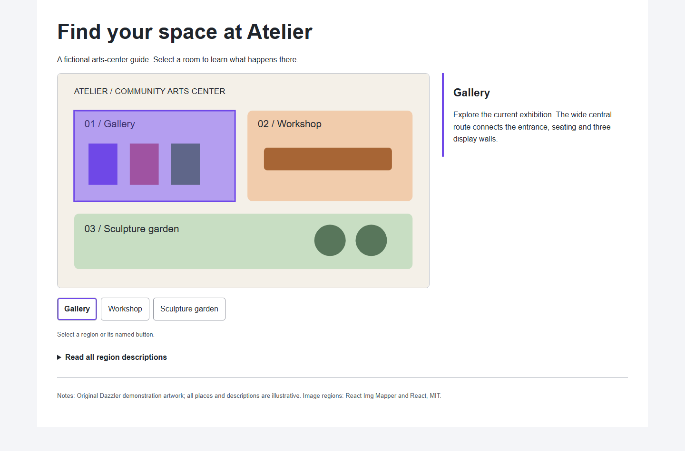
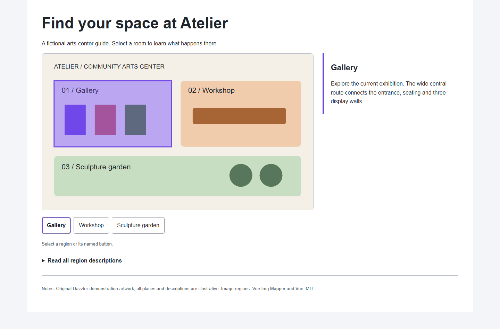

Vector regionsKeep the illustration crisp. Select named shapes and use accessible zoom and pan controls.Explore the vector guide
Image hotspots · ReactClickable image regions that stay aligned as the page resizes, with named controls and details.Explore the React guide
Image hotspots · VueThe same useful interaction in a Vue host, including keyboard activation and touch selection.Explore the Vue guide